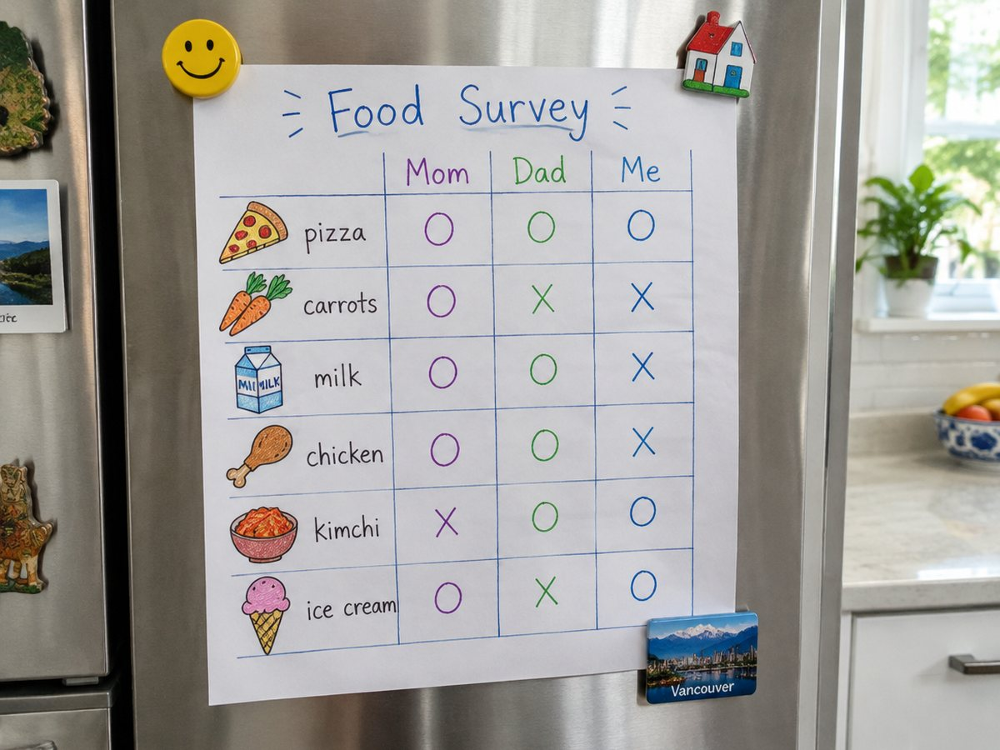

전체 단원 › 실험·활동 › 3학년 1학기 영어
냉장고 좋아요 설문판

가족에게 Do you like ~? 로 좋아하는 음식을 묻고, 냉장고에 붙인 설문판에 O, X를 모아요.
만들기 15분 · 설문 15분 · 난이도 ★☆☆ 쉬움
준비물
- 좋아요 설문판 도안 — 음식 그림 낱말 8개와 가족 기록 칸 (A4 1장)
- 색연필, 연필 —
- 냉장고 자석 또는 테이프 — 설문판을 붙여요
하는 방법
- 설문판 꾸미기
음식 낱말(pizza, carrot, milk, chicken, kimchi, ice cream, fish, banana) 옆 그림에 색칠해요. - 가족 이름 쓰기
맨 위 칸에 Mom, Dad, 형제 이름, 그리고 Me를 써요. - 묻고 답하기
아이가 가족에게 Do you like pizza? 하고 물어요. Yes, I do.면 O, No, I don't.면 X를 써요. - 결과 말하기
다 모으면 Dad likes chicken. Mom doesn't like fish. 처럼 결과를 말해요. 어려우면 Dad, chicken, yes! 도 괜찮아요. - 냉장고에 붙이기
완성한 설문판을 냉장고에 붙이고, 저녁 메뉴 정할 때 참고해요.
3~4학년 '좋아하는 것 말하기'는 Do you like ~? / Yes, I do. / No, I don't. 대화가 핵심입니다. 영어에서 좋아하는 것을 일반적으로 말할 때는 carrots, bananas처럼 복수형을 쓰지만(pizza, milk처럼 셀 수 없는 것은 그대로), 초등 단계에서는 문장 구조에 먼저 집중하고 복수형은 들려주기만 해도 충분합니다.
가족 결과를 말하는 3인칭(Dad likes)은 고학년 내용이니, 아이가 시도하면 칭찬만 해 주세요.
학교 교육과정 연결
- [4영02-08] 자기 주변 주제에 관한 담화의 주요 정보를 묻거나 답한다.